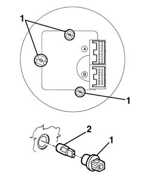
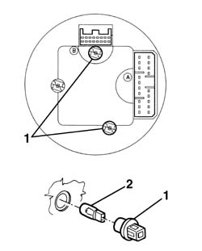

5560B06 instrument lightbulb/s - r+r - includes instrument r+r
- Path
- Procedures > 55 ELECTRICAL EQUIPMENT > 5560 INSTRUMENT PANEL > 5560B analogue control panel > 5560B06 instrument lightbulb/s - r+r - includes instrument r+r
- Kind
- repair procedure (removal / refitting; the operation number is the code)
- Applies to
- all engines; all production periods
- Interactive page
- https://sloeber94.github.io/elrnDB-a156/en/#/3238498
Applies to: all engines; all production periods
 Removing
Removing
 Refitting
RefittingFor the replacement of lamps of the speedometer/odometer proceed as follows.
1. Turn and remove the lamp holder of the instrument lamp (1a) or the lamp holder of the display lamp (1b).
2. Remove the lamp from lamp holder. Pressure joint.

Applies to: all engines; all production periods
To replace the lamps of the speedometer, proceed as follows.
1. Rotate and remove the lamp holder of the instrument lamp (1a) or the lamp holder of the brights(1b).
Remove the lamp from the lamp holder. Pressure joint

Applies to: all engines; all production periods
Refitting
RemovingCheck lamps functionality.
Insert lamp into lamp holder.
Insert lamp holder into its seat and turn it.
5560B02 . For speedometer and odometer.
5560B03 rev counter - r r . For revolution counter.
Check the functionality of the instrument lighting.